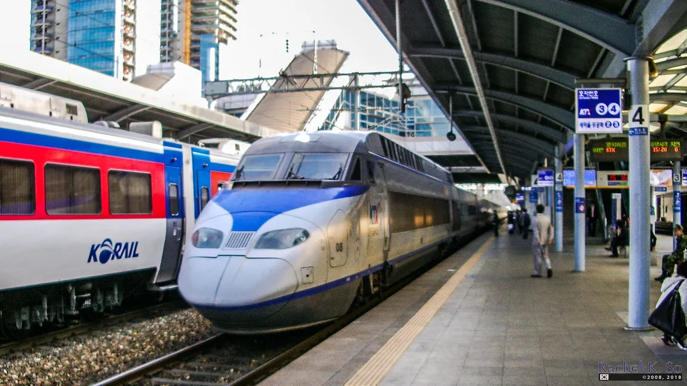
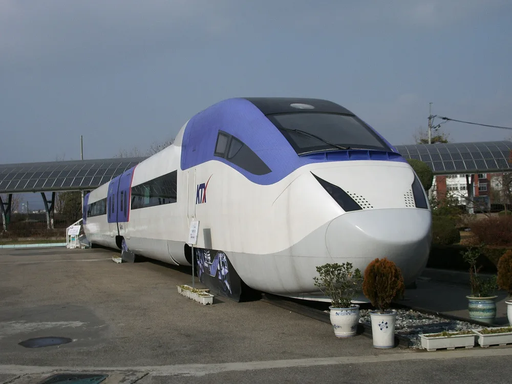

전국철도노동조합이 다음 달 10일 오전 9시부터 무기한 총파업에 들어가겠다고 예고했다. 노조는 11일 서울역 광장에서 총파업 선포 기자회견을 열고, 회사와 정부가 요구를 받아들이지 않으면 예고한 시각에 맞춰 일손을 놓겠다고 밝혔다. 파업 예정일까지 한 달가량 남아 있어 당장 열차 운행이 달라지는 것은 아니지만, 연말 이동 수요가 늘어나는 시기를 앞두고 나온 예고여서 이용객들의 관심이 커지고 있다.
노조가 내건 핵심 요구는 두 가지로 정리된다. 하나는 현장 노동자를 중심에 둔 공정한 승진제도를 마련하라는 것이고, 다른 하나는 철도 안전을 위한 인력을 즉시 충원하라는 것이다. 특히 선로 점검 분야에서는 현재 2명이 맡는 작업 인원을 3명으로 늘려야 한다고 요구하고 있다. 선로 위에서 이뤄지는 작업은 열차 접근을 살피는 역할이 따로 있어야 안전하다는 것이 노조 측 설명이다.

이번 파업 예고는 정해진 절차를 차례로 밟은 결과다. 노사 교섭은 지난달 14일 결렬됐고, 이후 진행된 쟁의행위 찬반투표는 77.58%의 찬성으로 가결됐다. 노조는 파업에 앞서 단계적으로 수위를 높여 갈 계획이다. 14일에는 서울역에서 총력결의대회를 열고, 23일부터는 2주 동안 안전운행 투쟁을 벌인다는 일정을 내놓았다. 안전운행 투쟁은 규정을 평소보다 엄격하게 지키며 일하는 방식이어서, 이 기간에도 일부 열차는 늦어질 수 있다.
이번 사안이 예년보다 더 주목받는 까닭은 고속철도 운영 체계가 달라졌기 때문이다. 한국철도공사(코레일)와 수서고속철도 운영사 SR은 지난 9월 1일 통합됐고, 이번이 통합 이후 처음 맞는 파업 국면이다. 과거에는 코레일 노조가 파업을 하더라도 SRT는 따로 운행됐지만, 운영 주체가 하나로 합쳐진 지금은 KTX와 SRT가 함께 영향권에 놓일 수 있다는 우려가 나온다. 한쪽 열차가 멈추면 다른 쪽으로 옮겨 타던 예전의 대안이 이번에는 통하지 않을 수 있다는 뜻이다. 고속버스나 항공편 등 다른 교통수단으로 수요가 몰릴 가능성도 함께 거론된다.
코레일은 노사 간 이견을 좁히기 위해 최선을 다하겠다는 입장을 밝혔다. 국토교통부와 코레일은 파업이 현실이 될 경우에 대비해 대체 인력을 투입하는 방안도 검토하고 있는 것으로 전해졌다. 철도는 법이 정한 필수공익사업이어서 파업 중에도 일정 비율의 열차는 반드시 운행해야 한다. 다만 과거 파업 사례를 보면 필수 운행 수준이 유지되더라도 열차 편수가 줄어 좌석을 구하기 어려워지고, 화물 수송에도 차질이 생기곤 했다.

남은 한 달은 협상의 시간이다. 노조가 예고 시점을 넉넉히 잡은 것은 그사이 교섭으로 접점을 찾을 여지를 열어 둔 것으로 볼 수 있다. 승진제도 개편과 인력 충원은 인건비와 정원 문제가 걸려 있어 공사 혼자 결정하기 어렵고, 정부와 협의가 필요한 사안으로 꼽힌다. 결국 정부가 어떤 태도를 보이느냐가 파업 여부를 가를 변수가 될 전망이다.
이용객 입장에서는 다음 달 10일 이후 열차를 타야 한다면 운행 계획 공지를 미리 살펴 두는 편이 좋다. 파업이 확정되면 코레일은 운행 중지 열차를 사전에 안내하고 예매한 승차권의 환불·변경 절차를 알리는 것이 보통이다. 노사가 파업 전에 합의에 이르면 예고는 철회될 수 있는 만큼, 향후 교섭 진행 상황을 지켜볼 필요가 있다.